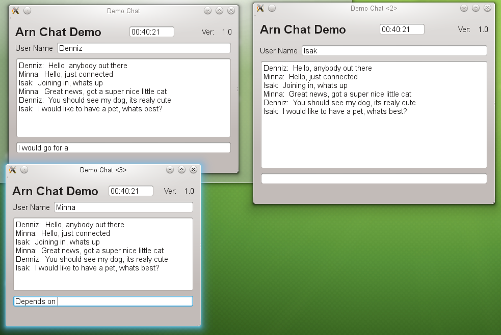

Demonstration with a simple chat program. It consists of a server and a client part. After starting the server, any number of clients can be started.
This demo is focused on the Service API (RPC) functionalty of ArnLib. Slots are remotely called from clients to server and the other way back. All is done with standard function calls without any visual serializing.
Chat Server ChatSapi.hpp, ServerMain.hpp, ServerMain.cpp, main.cpp
Chat Client MainWindow.hpp, MainWindow.cpp, main.cpp
Chat Server
ChatSapi.hpp
#ifndef CHATSAPI_HPP
#define CHATSAPI_HPP
#include <ArnLib/ArnSapi.hpp>
{
Q_OBJECT
public:
explicit ChatSapi( QObject* parent = 0) :
ArnSapi( parent) {}
signals:
void pv_list();
void pv_newMsg( QString name, QString msg);
void pv_infoQ();
void rq_updateMsg( int seq, QString name, QString msg);
void rq_info( QString name, QString ver);
};
#endif // CHATSAPI_HPP
ServerMain.hpp
#ifndef SERVERMAIN_HPP
#define SERVERMAIN_HPP
#include "ChatSapi.hpp"
#include <ArnLib/ArnItem.hpp>
#include <ArnLib/ArnServer.hpp>
#include <QTimer>
#include <QStringList>
#include <QObject>
class ServerMain : public QObject
{
Q_OBJECT
public:
explicit ServerMain( QObject* parent = 0);
signals:
public slots:
private slots:
void doNewSession( QString path);
void doTimeUpdate();
void chatList();
void chatNewMsg( QString name, QString msg);
void chatInfoQ();
private:
QStringList _chatNameList;
QStringList _chatMsgList;
QTimer _timer;
ChatSapi* _commonSapi;
};
#endif // SERVERMAIN_HPP
ServerMain.cpp
#include "ServerMain.hpp"
#include <ArnLib/ArnItem.hpp>
#include <QTime>
#include <QCoreApplication>
#include <QDebug>
ServerMain::ServerMain( QObject* parent) :
QObject( parent)
{
_timer.start(1000);
connect( &_timer, SIGNAL(timeout()), this, SLOT(doTimeUpdate()));
_server->start();
_arnTime.open("//Chat/Time/value");
_commonSapi = new ChatSapi( this);
_commonSapi->batchConnect( QRegExp("^pv_(.+)"), this, "chat\\1");
connect( arnPipes, SIGNAL(arnItemCreated(QString)), this, SLOT(doNewSession(QString)));
}
void ServerMain::doNewSession( QString path)
{
ChatSapi* soleSapi = new ChatSapi( this);
soleSapi->batchConnect( QRegExp("^pv_(.+)"), this, "chat\\1");
connect( soleSapi, SIGNAL(pipeClosed()), soleSapi, SLOT(deleteLater()));
}
void ServerMain::doTimeUpdate()
{
_arnTime = QTime::currentTime().toString();
}
void ServerMain::chatList()
{
ChatSapi* sapi = qobject_cast<ChatSapi*>( sender());
Q_ASSERT(sapi);
for (int i = 0; i < _chatNameList.size(); ++i) {
sapi->rq_updateMsg( i, _chatNameList.at(i), _chatMsgList.at(i));
}
}
void ServerMain::chatNewMsg( QString name, QString msg)
{
_chatNameList += name;
_chatMsgList += msg;
int seq = _chatNameList.size() - 1;
_commonSapi->rq_updateMsg( seq, name, msg);
}
void ServerMain::chatInfoQ()
{
ChatSapi* sapi = qobject_cast<ChatSapi*>( sender());
Q_ASSERT(sapi);
sapi->rq_info("Arn Chat Demo", "1.0");
}
main.cpp
#include "ServerMain.hpp"
#include <QApplication>
#include <QDebug>
int main(int argc, char *argv[])
{
QApplication a(argc, argv, false);
qDebug() << "Startar Arn Chat Server ...";
new ServerMain;
return a.exec();
}
Chat Client
MainWindow.hpp
#ifndef MAINWINDOW_HPP
#define MAINWINDOW_HPP
#include "../ArnDemoChatServer/ChatSapi.hpp"
#include <ArnLib/ArnClient.hpp>
#include <ArnLib/ArnItem.hpp>
#include <QMainWindow>
#include <QVector>
namespace Ui {
class MainWindow;
}
class MainWindow : public QMainWindow
{
Q_OBJECT
public:
explicit MainWindow(QWidget *parent = 0);
~MainWindow();
private slots:
void doSendLine();
void doTimeUpdate( QString timeStr);
void chatUpdateMsg( int seq, QString name, QString msg);
void chatInfo( QString name, QString ver);
private:
Ui::MainWindow *_ui;
QVector<QString> _chatNameList;
QVector<QString> _chatMsgList;
ChatSapi _commonSapi;
ChatSapi _soleSapi;
};
#endif // MAINWINDOW_HPP
MainWindow.cpp
#include "MainWindow.hpp"
#include "tmp/ui_MainWindow.h"
MainWindow::MainWindow( QWidget* parent) :
QMainWindow( parent),
_ui( new Ui::MainWindow)
{
_ui->setupUi( this);
_ui->userEdit->setFocus();
connect( _ui->lineEdit, SIGNAL(returnPressed()), this, SLOT(doSendLine()));
_arnClient.connectToArn("localhost");
_arnClient.setMountPoint("//");
_arnTime.open("//Chat/Time/value");
connect( &_arnTime, SIGNAL(changed(QString)), this, SLOT(doTimeUpdate(QString)));
_commonSapi.open("//Chat/Pipes/pipeCommon");
_commonSapi.batchConnect( QRegExp("^rq_(.+)"), this, "chat\\1");
_soleSapi.batchConnect( QRegExp("^rq_(.+)"), this, "chat\\1");
_soleSapi.pv_infoQ();
_soleSapi.pv_list();
}
MainWindow::~MainWindow()
{
delete _ui;
}
void MainWindow::doTimeUpdate( QString timeStr)
{
_ui->timeEdit->setTime( QTime::fromString( timeStr));
}
void MainWindow::doSendLine()
{
QString myName = _ui->userEdit->text();
QString line = _ui->lineEdit->text();
_ui->lineEdit->clear();
_soleSapi.pv_newMsg( myName, line);
}
void MainWindow::chatUpdateMsg( int seq, QString name, QString msg)
{
if (seq >= _chatNameList.size()) {
_chatNameList.resize( seq + 1);
_chatMsgList.resize( seq + 1);
}
_chatNameList[ seq] = name;
_chatMsgList[ seq] = msg;
QString text;
for (int i = 0; i < _chatNameList.size(); ++i) {
text += _chatNameList.at(i) + ": " + _chatMsgList.at(i) + "\n";
}
_ui->textEdit->setText( text);
}
void MainWindow::chatInfo( QString name, QString ver)
{
_ui->appNameLabel->setText( name);
_ui->verLabel->setText( ver);
}
main.cpp
#include "MainWindow.hpp"
#include <QApplication>
int main(int argc, char *argv[])
{
QApplication a(argc, argv);
MainWindow w;
w.show();
return a.exec();
}
Pictures

 1.8.1
1.8.1